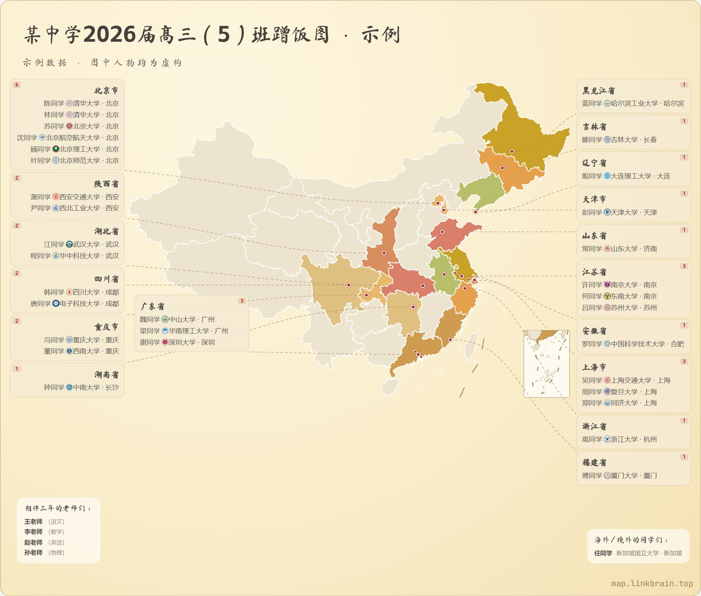
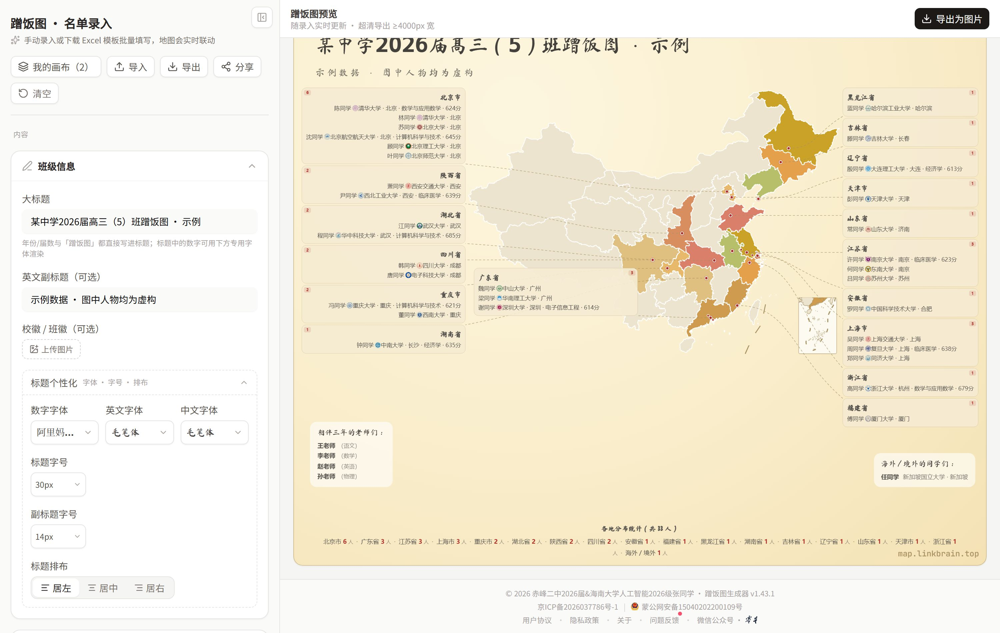
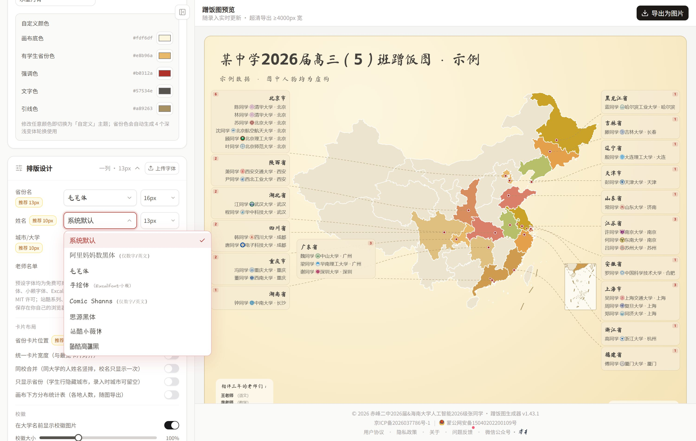
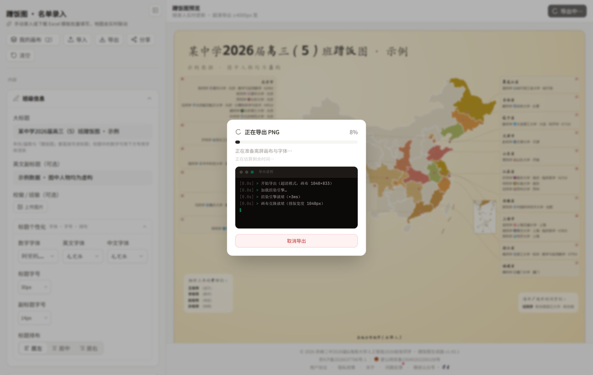
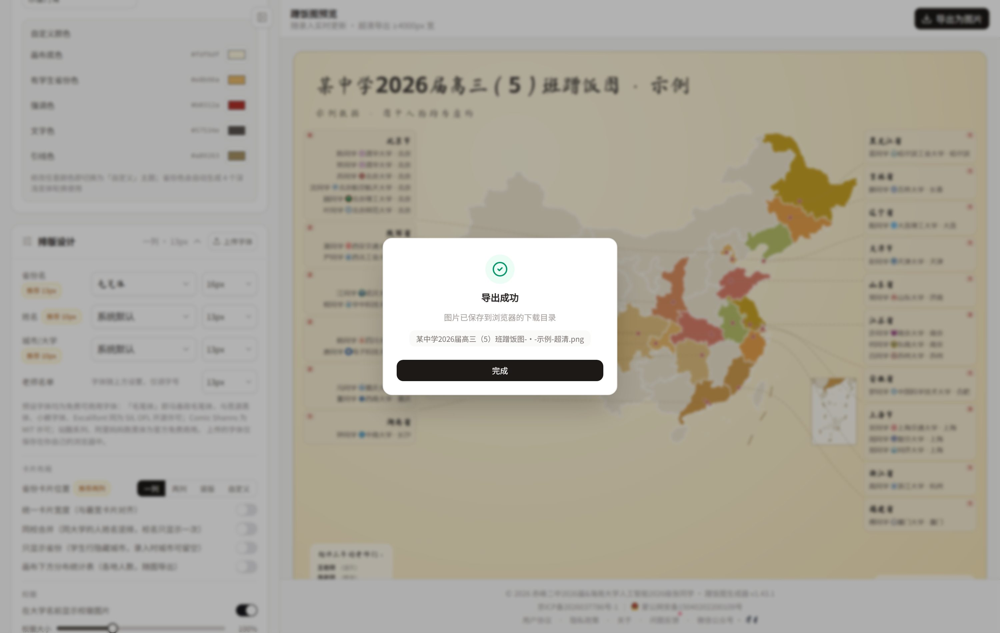
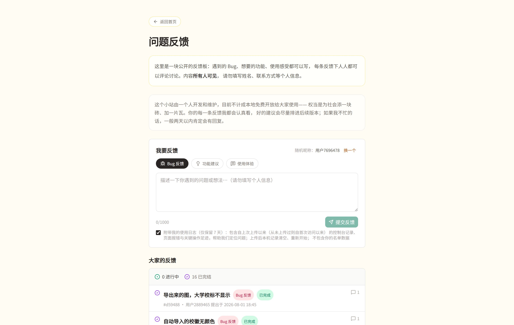

不积跬步，无以至千里；不积小流，无以成江海。
今天，蹭饭图生成器发布 2.0 版本。从 1.0 到 2.0 共用了一个月、四十多个版本。这篇文章完整地介绍一遍它现在的样子。
蹭饭图生成器是一个为毕业班设计的小工具：录入全班同学的去向，自动生成一幅中国地图——谁去了哪座城市、哪所大学，在图上一目了然。生成的图片可以发到班级群，约好以后每到一地，都有人管饭。
工具完全免费，无需注册，数据只保存在你自己的浏览器里。打开 map.linkbrain.top 即可使用。

一幅 33 人的蹭饭图（示例，人物均为虚构），卡片角落为人数统计
名单
■ 三种录入方式
手动逐条录入；下载 Excel 模板填好后上传；或者直接导入 JSON。手机、电脑都能操作，电脑上批量录入效率更高。录入时按「省份—城市」两级下拉选择，覆盖全国所有地级市。
■ 按大学自动推断城市
填写大学后，系统会根据内置的大学库自动匹配所在城市，校名里带地名的（如「四川大学」）会直接识别。不方便精确到城市的同学，可以只录省份，图上只标注省份；导入 Excel 和 JSON 时同样支持。
■ 老师名单与标题
可以录入相伴三年的老师们，在画布上单独成块；大标题、副标题、届数都可以自定义，老师块的标题也可以改。
■ 名字一键隐私
蹭饭图经常被转发到群和朋友圈，不是每个人都愿意公开全名。打开「名字一键隐私」，整张图的名字变为「姓 + 同学」；随时可以再关回去，原始数据不会丢失。
排版
■ 四种排版方式
名单卡片可以排在地图两侧（一列或两列）、全部排在地图下方（竖版），或者完全自定义位置。自定义模式下卡片自由拖动，拖动时出现辅助对齐线，5 像素内自动吸附；一个按钮可以让所有卡片统一为最宽的宽度。画布边界会随卡片位置自动伸缩，不留多余空白。
■ 卡片拆分与同校合并
人多的省份可以拆成两张甚至更多卡片，人员在卡片之间互相拖动分配；也可以按城市分组。选择同校合并后，同一所大学的名字排在一起，学校之间用细分隔线隔开。选中任意卡片，四条边和四个角都可以拖拽调整大小。
■ 人数统计与分布表
每张卡片的角落可以显示一个小巧的人数统计，默认关闭，可在设置中开启。它会跟随卡片的对齐方向自动换边，不遮挡文字。
画布下方还可以加一行分布统计表：全班人数、各地分布，一行列清。它会随导出一起进入 PNG。

画布下方的分布统计表（示例人物均为虚构）
■ 画布装饰：文本框与图片
可以向画布自由添加文本框和图片，拖动到任意位置。文字支持字号和颜色，图片支持调整宽度；它们会出现在导出的图片里，也会被打包进全量备份。
■ 主题与字体
预设七套主题配色，也可以逐项自定义颜色，包括每个省份在地图上的颜色——有没有人去的省份都可以单独设置。
预设字体共十款，全部免费可商用，可以细到每个模块分别设置：新增「手绘体」（与手绘白板 Excalidraw 同款组合，拉丁字符用 Excalifont，中文用落霞孤鹜的小赖字体）和漫画等宽字体 Comic Shanns，标题还可以写成毛笔字。字体下拉里能看清每款字体的全称和适用槽位。

字体选择：手绘体（Excalifont + 小赖）、Comic Shanns、思源黑体
校徽
■ 自动匹配，也支持单独定制
校徽库覆盖 2986 所高校，全部自托管在自己的服务器上，一次访问、永久缓存，不再依赖第三方站点。大学填写后校徽自动出现在名字旁边；个别学校没有收录或想用别的图，可以为每个人单独上传，大小用滑块调节。
导出
■ 超清 PNG
导出的图片宽度不少于 4000 像素，与设备屏幕分辨率无关——手机屏幕再小，导出的图也一样清楚。右下角带一枚随画布大小缩放的水印。
■ 闲时预加载与进程终端
字体分片加载、渲染引擎预热等准备工作，会在你录入名单的空当提前完成，点下「导出为图片」时大部分工作已经就绪。
导出时的进度框里有一扇黑色小窗口：加载渲染引擎、克隆画布、嵌入字体、逐层栅格化，每一步实时滚动，让你确认程序没有卡住。导出可以随时取消。

导出进程终端（示例人物均为虚构）
■ 成功确认与失败提示
导出完成后会弹出「导出成功」确认框，附完整文件名。万一失败，页面会给出简略原因和直达问题反馈的按钮，不会对着空白猜测。

导出成功确认框
■ 全量备份
可以把整个画布打包成 zip：名单、卡片位置、主题、字体设置、上传的校徽和装饰图片，一样不落。换一台电脑导入这个 zip，画布原样恢复。
分享与协作
■ 多画布与跨设备接力
支持创建多张画布分别管理，新建时先命名，名字就是画布的大标题。在手机上点「分享 → 在其他设备上继续此工作」，画布顺着链接转到电脑上接着做；也可以生成分享链接发给同学，对方打开就能导入一份副本。
反馈
■ 反馈板
「问题反馈」页是一块公开的反馈板：每条反馈公开可见，人人可以评论，作者逐条回复，并标记「进行中」「已完成」或「暂不处理」。你的反馈被回复时，页脚的「问题反馈」会亮起红点。作者也会在这里发布更新说明和使用技巧。

反馈板：每条反馈都有状态，都有回复
■ 错误自动上报
页面发生任何脚本错误都会自动上报。提交反馈时可以选择附带最近的使用日志：控制台记录、页面报错、导出等关键操作的技术细节，不包含名单数据。配合匿名的行为分析标识，我们能定位问题发生在哪一步，而不需要知道你是谁。
■ 数据只在你手里
名单数据只保存在你自己的浏览器本地，不上传任何服务器。清除浏览器数据前，记得先导出图片或备份 zip。
写在后面
这个工具由一个人开发和维护，不计成本，免费开放。2.0 的绝大多数改动来自反馈板上的声音——你认真写的每一条建议，都会被认真读。
使用中遇到任何问题，或者有功能建议，欢迎随时到反馈板提交，作者通常会在两天内回复。
立即生成你们班的蹭饭图
map.linkbrain.top
点击公众号名片关注《零本》，回复「蹭饭图」获取直达链接
蹭饭图生成器的著作权归 © 2026 赤峰二中2026届&海南大学人工智能2026级张新越 所有。
编辑：张新越
监制：李翼安
测试：刘轩博 商航宇